19 October 2026. Screenshot and interaction audit of the three-axis module across Learn, Explore, Challenge, and Design. Existing machine behavior and learner work were preserved.
Desktop · Explore
1440 × 900 browser viewport
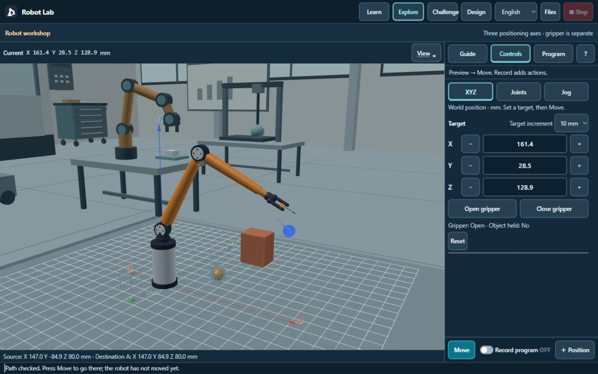
The scene and contextual panel occupy separate columns. Move and recording remain pinned below the scrollable controls.
Desktop · Lesson demonstration
1440 × 900 browser viewport
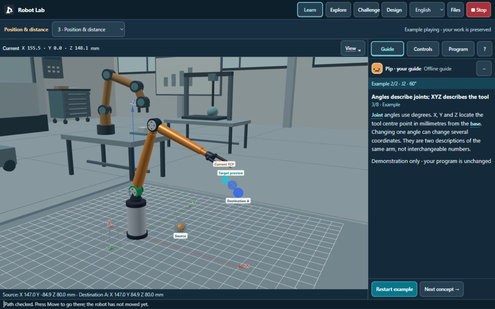
The robot and current demo step are visible together. The Stop control stays in the header.
Desktop · Design
1440 × 900 browser viewport
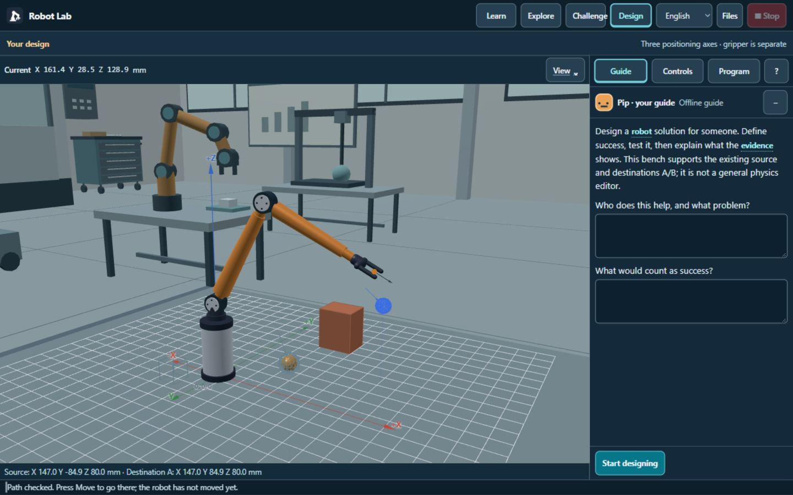
Problem and success-criteria fields are kept in the guide panel, without covering the scene.
Tablet · Challenge
820 × 1180 browser viewport
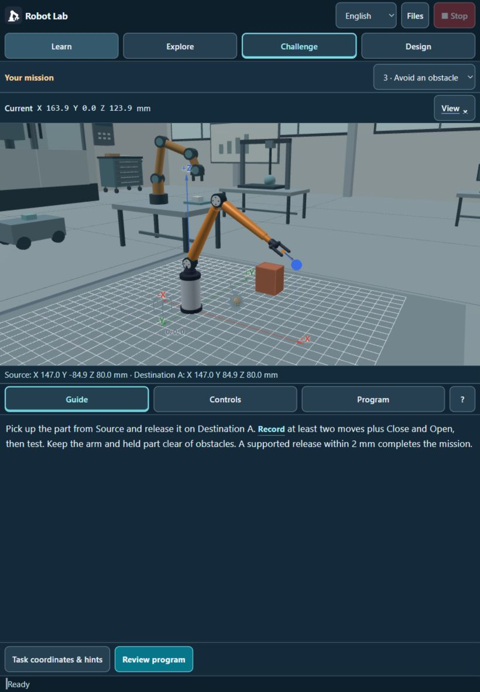
The larger scene sits above one panel. Instructions, Controls, and Program share the same space.
Phone · XYZ controls
390 × 844 browser viewport
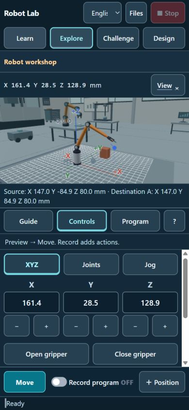
All three coordinate values share a compact row; Move and Record remain reachable.
Phone · Program review
390 × 844 browser viewport
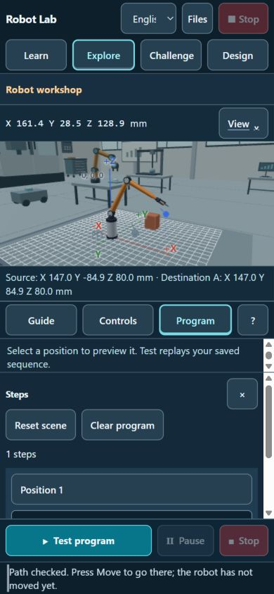
Program review replaces controls. The scene stays visible; testing controls remain pinned.
Phone · Robot-type example
390 × 844 browser viewport
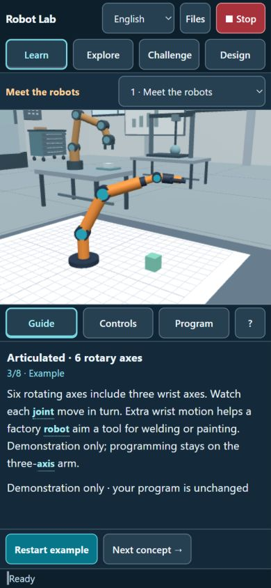
Demonstrations use the complete reserved scene region without unrelated coordinate overlays.
Phone · Chinese practice
390 × 844 browser viewport
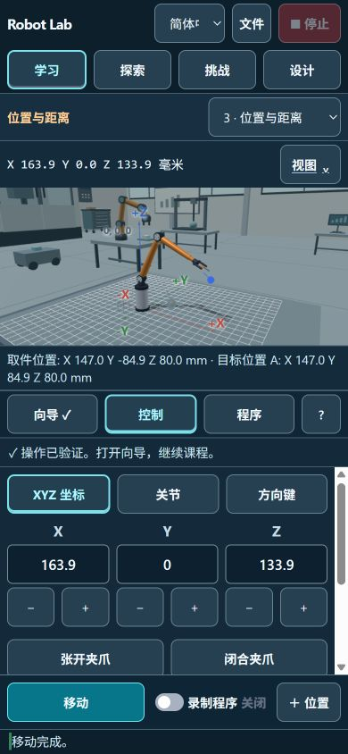
Completed practical work marks Guide with a check and gives explicit continuation guidance.
Small phone · Learn
320 × 568 browser viewport
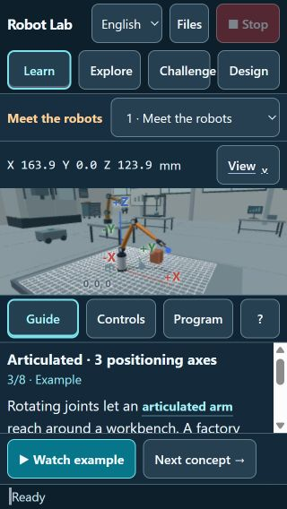
Helper utilities are collapsed; lesson text scrolls independently with continuation actions available.
Landscape phone · Jog
844 × 390 browser viewport
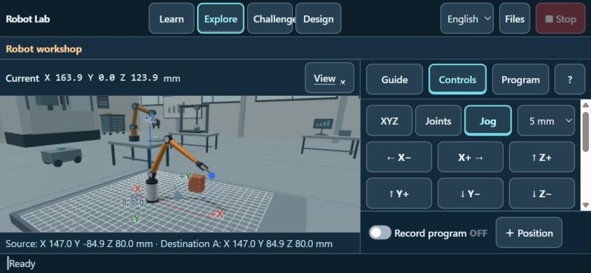
A compact six-button jog arrangement fits above the pinned recording bar.
Tablet · Recovery feedback
820 × 1180 browser viewport
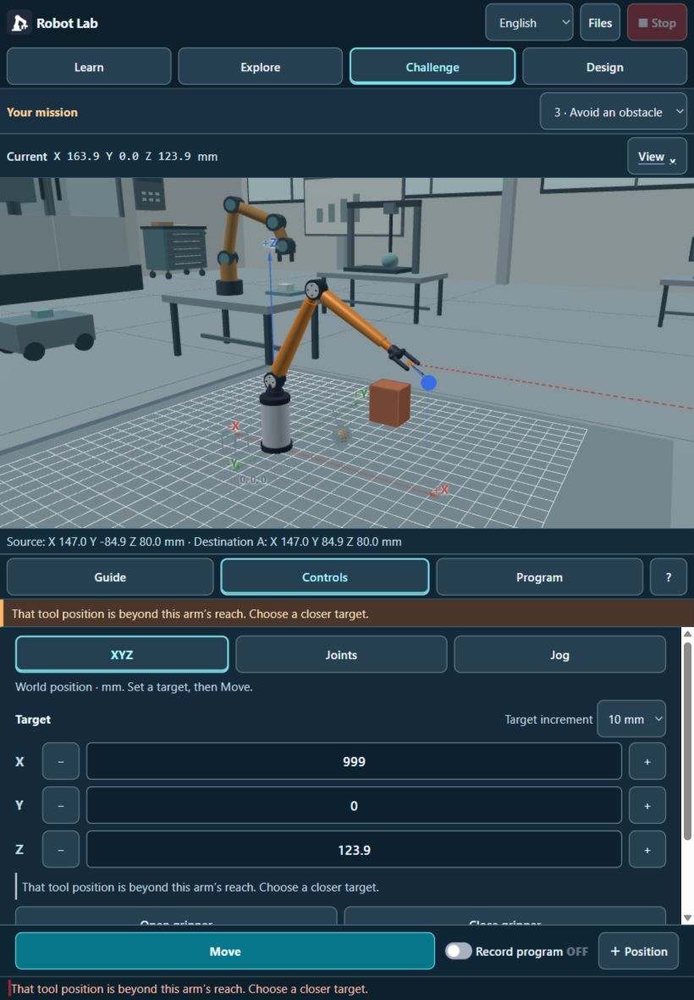
An unreachable target leaves the robot unchanged and gives a specific correction beside the controls.